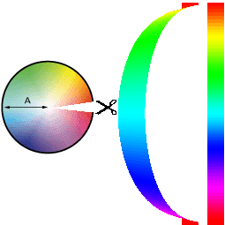

ColorPicker by Anna-Carin, beta-version
2003.
Introduction
This utlility is fairly the same as the colorpicker in Adobe Photoshop.
The web-safe color option has been omitted since the web has developed
to accept 24 bit RGB-colors. Additions are the picture-option, that is
you can have a number of (max 256) favourite pics which you use as your palette.
Furthermore there is a button for switching a color to its complementary
counterpart. Useful for choosing matching colors at design work. There
is also a quick memory function, similar to the button M<>R on
mini-calculators.
Color basics
You should understand a few concepts of color before reading further.
- Color circle: The whole bunch of possible colors (Hue) to be seen
by the human eye is present in the rainbow. A practical model is to distribute
these colors evenly on a circle. To save space the circle in ColorPicker
has been reshaped to a pillar.

All colors (almost) can be achieved by mixing the three colors RED,
GREEN and BLUE.
Based on the human perception of color, the HSB model describes three
fundamental characteristics of color:
• Hue is the color reflected from or transmitted through an object.
It is measured as a location on the standard color wheel, expressed as
a degree between 0° and 360° . In common use, hue is identified
by the name of the color such as red, brown, or green.
• Saturation, sometimes called chroma, is the strength or purity
of the color. Saturation represents the amount of gray in proportion to
the hue, measured as a percentage from 0% (gray) to 100% (fully saturated).
On the standard color wheel, saturation increases from the center to the
edge.
• Brightness is the relative lightness or darkness of the color,
usually measured as a percentage from 0% (black) to 100% (white).
The different color models/modes in ColorPicker

1. The first radio button stands for Hue and gives a Hue spectrum on
the pillarshaped picturebox and a 2-dimensional shading in the big picturebox..
Since the spectrum actually is a circle it is measured in 0 to 360 degrees
in the numerical textbox.

2. The second radio button stands for Saturation and displays a saturation
slider on the thin picturebox while the big box shows a hue spectrum with
fading lightness.
3. The brightness radio button displays a brightness slider on the
thin picturebox while the big box shows a hue spectrum with fading brightness.
4. The RED radio button displays a brightness slider on the thin picturebox
while the big box shows a 90 degrees crossfade between green & blue
on a static red bottom.